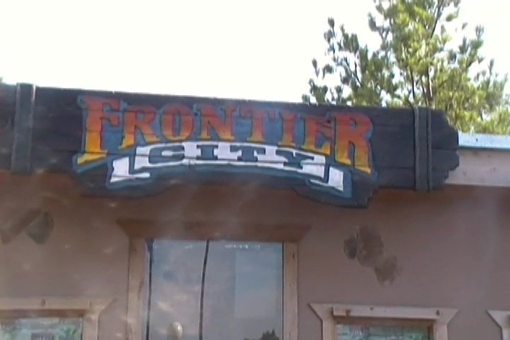
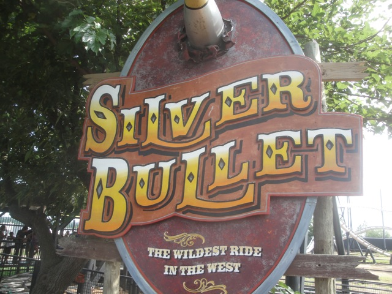
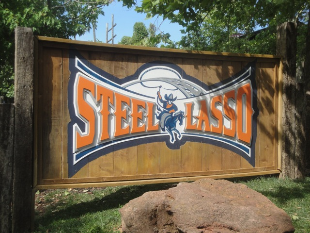
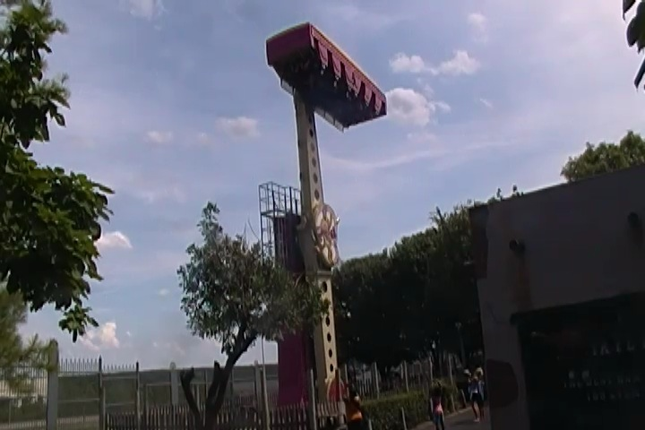
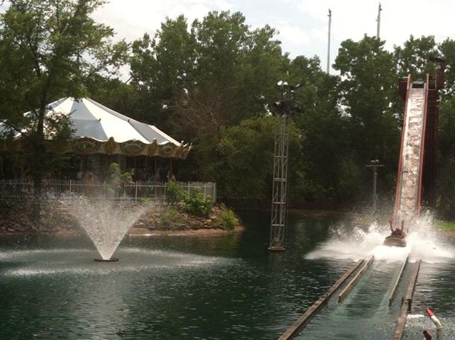

| |
Frontier City Review

Frontier City is a fun little park. Now this is a park that most enthusiasts don't give a second thought about because let's be honest. There's really not a whole lot here and the park is far more for locals. Well, nearly all parks are, but this one in particular has nothing that really stands out of interst for coaster enthusiasts. With that said, it is a fun little amusement park. I mean, it does have a Schwarzkoph Looping Star, which are always fun rides, and an Arrow Shuttle Loop, which is actually something very unique to the park as they are very rare rides with only 3 in the world. Fun, but the coasters here are nothing to scream over. And that's sort of the theme for the rest of the park. The flat rides are fun, but whatever. Water Rides are fun, but whatever. So to an enthusiast who travels out to tons of parks, this was a very quick and easy park to conquer in just a few hours. But to be fair, I still had fun, even if the park is nothing that special. Would I recommend going out of your way for it? No. It's not that special, and there aren't really any other parks nearby, since let's face it. People don't want to travel to Oklahoma City (Sorry locals). But if you are a local, Frontier City is a fun little park to spend an afternoon.
Rollercoasters
There is a link to a review of all the Rollercoasters at Frontier City.
Top Coasters
Silver Bullet Review

Fun Coasters
Diamondback Review

Wildcat Review

Family Coasters
Steel Lasso Review

Flat Rides
All right. Here are all of the flat rides that are found at Frontier City. Let's start out with their best flat ride and the star attraction of the flat ride collection. Mind Bender, which is the parks Inverter. I'm not sure what it is about these rides, they're just a ton of fun. Maybe it's because they're just so open. A real shame that they're becoming more and more rare with time. The only other flat ride I rode here was their Enterprise. I know I like these rides, but the one here ran a lame program. No way of dancing around it. The program sucked. Huh? Just learned that it closed down. Whatever. Like I said, it ran a sh*tty program. DUDE!! JUST LEARNED THEY HAVE A ROTOR!!! I REALLY wish I knew about that. If I did, I would've rode it!!! Oh well. They also have a Super Loop, a wipeout, a scrambler, a tilt a whirl, some flyers, bumper cars, a ferris wheel, and a carousel. Not the best flat ride collection, but it seems like a good fit for a park like this.

Ride this ride. It's becoming more and more rare.
Dark Rides
Frontier City's dark ride collection may not stand out as I apparently didn't even know they had a dark ride. Seriously. If I did, I probably would've ridden it. Granted, it's just a typical Sally Shooting Dark Ride. But hey. Those are fun. Granted, I'm sure a lot of locals are pissed that those aren't real guns (there are plenty of those in Oklahoma). But it does seem like a fun ride and that it would balance out the park and be a good fit for Frontier City.
Water Rides
I didn't bother with the parks log flume. And while it doesn't look like anything special, it does seem like a fun little ride. Oh, and there's also a rapids ride that looks fun. Don't want to go out of my way for it, but it does seem fun nonetheless. If its hot outside, these should be fun water rides to cool off with.

SPLOOSH!!!
Dining
The dining at Frontier City is nothing special. I didn't even eat there (I bought a Coke, but that's nothing). And nothing looks impressive.
Theming and Other Attractions
Here are the reviews of all the other stuff at Frontier City. As for theming, there's some Wild West theming around the park. It's nothing special or anything to scream about. But I will admit that it is something that added a nice little touch to the park. I always enjoy it whenever parks try and add some theming to the park, and the Wild West theming is very welcomed at Frontier City. I definetly approve of it. As far as other stuff to do, I can't really think of anything else. It mostly seems to just be arcade games and rides.
In Conclusion
Frontier City is a fun little amusement park in the middle of Oklahoma City. It's a very local park. Yeah, they do have some fun rides, including a Schwarzkoph Looping Star, which are tragicly becoming more and more rare by the day since the world just doesn't appreciate Schwarzkoph. But honestly, outside of that, there's not much to the park. Yeah, it has a woodie and Arrow Shuttle Loops are rare. But nothing about Frontier City just makes you want to go out of your way to get there as a coaster enthusiast. Even with those rare rides, it just seems kind of like a credit whore stop. And let's be real. Nobody wants to go to Oklahoma City. It's just not that kind of a place. But hey, for locals, this seems like a fun little park that they can enjoy. Besides, what else are they going to do? It's not like there are any other parks for miles around.
Enthusiast FAQs.
*Are there kiddy coaster restrictions? - Yes, adults must be accompinied to ride Wild Kitty.

Tips
*Get some rides on Silver Bullet. It's a fun ride.
*Look out for dumbass security guards.
*Have Fun!!!!
Theme Park Category:
Small Park
Location
Oklahoma City, Oklahoma, USA
Last Day Visited
July 21, 2013
Video
I didn't shoot enough video for a Frontier City video. Knowing that it's a small park, it's very unlikely that I'll get to make one.
Complete Update List
2013
Texas/Rocky Mtn Road Trip
Here's a link to the parks website.
Home
|